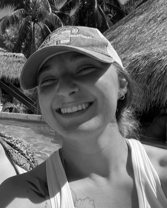

Hi, I'm Kali! I am a web developer with experience creating full stack websites. I help organizations, individuals, and really any entity that needs a web presence achieve that goal. My strengths are mainly in the front-end development process with main tech languages of JavaScript, React, and of course HTML/CSS. However, I do find that I pick up back-end structure and language quickly. I am a lifelong learner currently taking a course through AppAcademy for full stack engineering. I love to travel, scuba dive, and spend quality time with those closest to me.
Making a difference in the lives of those around me is what motivates me. Being creative and productive are two things that give me purpose and motivate me through a day. Pair the creativity and productivity with making something for someone; who most likely is unable to make that thing for themselves, is what brings me joy in my work. I am also incredibly motivated by the puzzle that software
development can bring. There is no better feeling than finally solving that little bug that inevitable crops up int he development of a website or application!
That is an excellent question! As long as I can remember when someone asked me what I wanted to do as a career I have always responded, "Be a doctor.". More specifically an anesthesiologist. Along the way, during my patient contact hours mid way through my Bachelor's degree I fell in love with the clinic I was volunteering at and made a bit of a pit stop. I have been working at that clinic for the past 9 years because of the staff, the patients, and mostly the owner. It seemed like this was going to be my forever space until Covid. That really took a toll on my patience with patients. Everyone who walked through the door was so angry and irritated at everything. No one was grateful for any care that was provided for them. Which really was the catalyst for me to take an introspective look to see if this is really where I wanted to stay for my entire working life.
In my initial search for potential jobs that would allow me a respite from patient care; Software Engineer was a common recommendation, this was when I realized that even as I was traveling down my path of becoming a doctor I have always dabbled in software development of some form or another. From high school and college electives to even creating and managing multiple drag and drop websites. It was a short week of research to realize that software development checked all the boxes for a nice peaceful, long career for me.
The lifestyle of productive focused work that was creative but in a structured way it's like someone took art class but made it a math problem. This scratches an itch so deep in my brain and makes me so happy to have these worlds collide. The potential for remote work, allowing the ability to travel and continue to have stability, is the work-life balance I have been dreaming of. Honestly, talking to co-workers and bosses more than an infinite number of patients at my place of employment and having those conversations be one of work and creation instead of constant complaining and self-centered despair sounds like a dream. And I know it may be a bit taboo but the potential income isn't a turn off for the field either. I am not afraid of hard work and I love to learn. The more I researched the more that I found software engineering and development is exactly what I have been looking for and it has been in front of me this whole time. While, I am a bit late to the party of figuring out what I want to do when I grow up; better late than never.
I am the most proud of my ability to bring order and organization to hectic environments. As an executive assistant my main job has been to evaluate and create or recreate, if necessary, standards and procedures for all things in the company. I do find it easy to pick up on patterns and see a more efficient way of working when given the time to evaluate  a process or task. I also think that my communication skills are very strong. I am good at putting myself in another individual's situation and seeing their perspective. I also listen to others well which aids in my ability to effectively communicate with almost everyone easily.
a process or task. I also think that my communication skills are very strong. I am good at putting myself in another individual's situation and seeing their perspective. I also listen to others well which aids in my ability to effectively communicate with almost everyone easily.
I tend to be a bit of a perfectionist. While quality of work is never a weakness I am constantly keeping myself in check on not obsessing about what I am doing. While I am a very timely person and pride myself on never being late for a due date I do have to continue to remind myself of what I can actually get done in a specific timeframe versus the grand plans of perfection that my brain will take me down. I manage this with a very structured work schedule and constantly updated task lists. I allow myself to make drafts of things with notes of how it could be improved to ensure that the entirety of my task list is at least produced before diving fully into one item alone. If I do not have the time to fully develop a piece of code to the fullest extent of my imagination I will get a functioning version done for production with notes of how it can be refactored or further developed if it is desired by the company or group I am working for or with. I also set a schedule for myself of focused work with small breaks to make sure that my time is being used effectively and not overloading on reading code which can lead to decreased production, sloppy development, or spiraling on one bug for too long when a simple ten minute break to return with fresh eyes will make the mistake stand out quickly.
I definitely see the perfect dream work-life balance in my future. A job as a software engineer, working remotely, while traveling and scuba diving.
Stability, creativity, learning, exploration, and freedom. That sounds like the making for a long happy career and life!
This site was created with the Nicepage